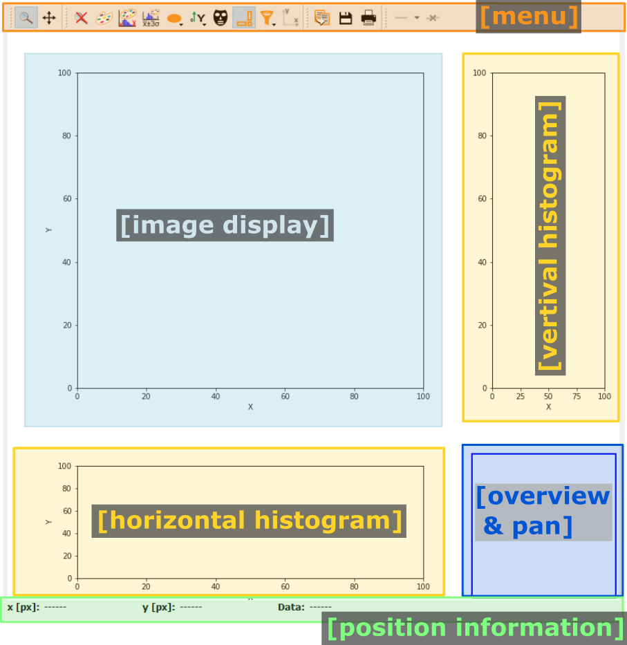

Data browsing frame
The data browsing frame allows the visualization of two-dimensional data. The frame is divided in two main parts: On the left, a directory explorer allows to browse the full file system and select files. The right side, a data display allows to visualize data.
{kind=link}
The width of the directory explorer widgets can be adjusted by using the two arrow buttons in between the two main widgets, to reduce or to enlarge the directory explorer, respectively. Alternatively, the splitter between the two frames can be dragged by the mouse to change the relative sizes.
Warning
The two main widgets have a defined minimum size. If the user drags the splitter further, the respective widget will be hidden. It can be enlarged again by capturing and dragging the slider from the edge towards the center.
Controls
The controls are located on the left, above the directory explorer. Selecting or deselecting an option will directly update the directory explorer.
The options are:
Show network drives
This option allows to show or hide linked network drives in the explorer view.
Sorting is case sensitive
This option toggles case sensitive sorting. If enabled, lowercase and uppercase names will be sorted and displayed separately.
Directory explorer
The directory explorer is used to select the data to be displayed. The exact look and feel will depend on the used operating system and might be different from the screenshots shown here.
A single click on an item will just highlight the item but will otherwise be ignored. Double-clicking on a folder (or the arrow next to a folder) will expand or collapse the folder, depending on the folder’s current state. Double-clicking on a file will instruct pydidas to open the selected file. If the data format is readable and the file contains two-dimensional data, the content will be displayed in the ImageView widget. In case of hdf5 files, an aditional selection field will be shown to select the data frame.
The hdf5 data selection widget
The hdf5 data selection widget is shown below.
The first row allows the user to select dataset filters for specific names. For example, the Eiger detector master file has a number of datasets for detector specific settings like offsets and calibrations for the different modules. If the respective box is ticked, these datasets will not be shown in the drop-down list. Additional filters for datasets can be set on their minimum size (the total number of datapoints, not per axis) and minimum data dimension. Any changes to the filters will update the list of filtered datasets immediately.
To select a dataset, simply select the corresponding hdf5 dataset key from the list. This will update the selection of the data frame.
Note
For three-dimensional datasets, pydidas will assume that the first dimension in the dataset is always the frame number and the second and third dimensions correspond to the detector data frame.
The data frame can be selected by dragging the slider, clicking on an arrow or by entering a new number. Clicking on “Show full frame” will show the selected frame in the ImageView widget.
Note
Changing the selected frame will only trigger an update of the ImageView if the “Auto update” checkbox is ticked.
Pydidas ImageView
The PydidasImageView is a
subclassed silx ImageView
with additional features useful in pydidas.
Its layout is shown below:
{kind=link}
- The menu
The menu bar allows access to all generic silx and additional pydidas functionality. The detailed menu icons and actions are described below in the menu entries description.
- The image display
This plot shows the image data. Depending on the zoom level, this is either the full image or a sub-region.
- The overview & pan area
This widget shows the current zoom region with respect to the full image, if the user zoomed in on a subregion. In addition, it allows to pan the image region by dragging the zoom region.
- The histograms
The vertical and horizontal histograms display the histograms for the selected image region.
- The position information
This widget displays the coordinates and data values of the data under the mouse cursor.
menu entries description
menu icon |
description |
|---|---|
Zoom mode: clicking with the mouse and dragging spans a new selection of the data to be visualized. |
|

|
Panning mode: clicking with the mouse and dragging moves the data on the canvas. |

|
Unzoom: Reset the display region to the full data. |

|
Open the colormap editor. This button opens a window with selections for the colormap and scaling of the displayed minimum and maximum values. |

|
Crop histogram outliers: Calculate the histogram of the image and set the colormap to ignore the low x% and the top *y% of the image histogram. The levels of x and y can be adjusted in the pydidas user settings. |

|
Autoscale the colormap to the image mean value +/- 3 standard deviations. |

|
This action allows to control the aspect of the displayed data and allows to stretch the data to fill the available canvas or keep its original aspect ratio. |

|
Control the position of the origin in the image: Select between the top left and bottom left corner. |

|
Mask tools: This button opens an additional widget at the bottom of the canvas with tools for importing or setting a mask to mask certain data regions. |
Show/hide the histograms at the side. This will also hide the overview & pan widget. |
|
Filter tools: This button allows the user to select simple filters to apply to the image data. |
|

|
Set coordinate system: This button will open a submenu which allows to
select the coordinate system (cartesian or cylindrical). Note that the
cylindrical coordinate system use the global |

|
Copy the currently visible figure to the clipboard. This will only copy the main figure and not the histograms. |

|
Save the currently loaded full data to file, ignoring any zooming. This function will open a dialogue to select the file type and filename. Depending on the selected file type, the colormap and scaling will be retained (e.g. for png export) or ignored (e.g. tiff export). |

|
Print the currently visible figure. This will print only the data visible on the canvas and it will retain colormap and scaling settings. |

|
Create and delete line profiles. This function allows the selection and editing of line profiles. The line profiles are shown in the histograms plots for the vertical and horizontal, respectively. |